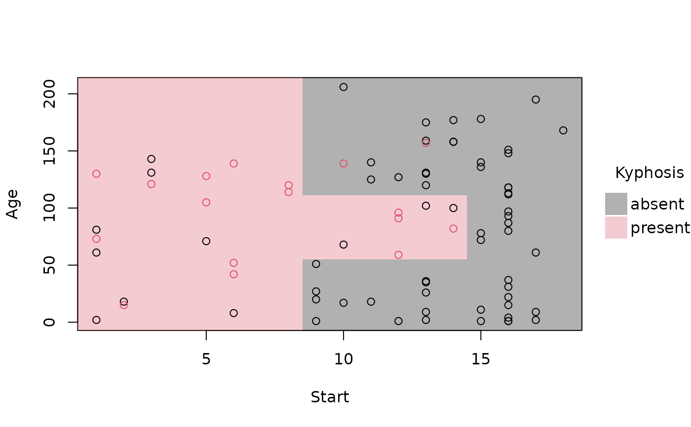
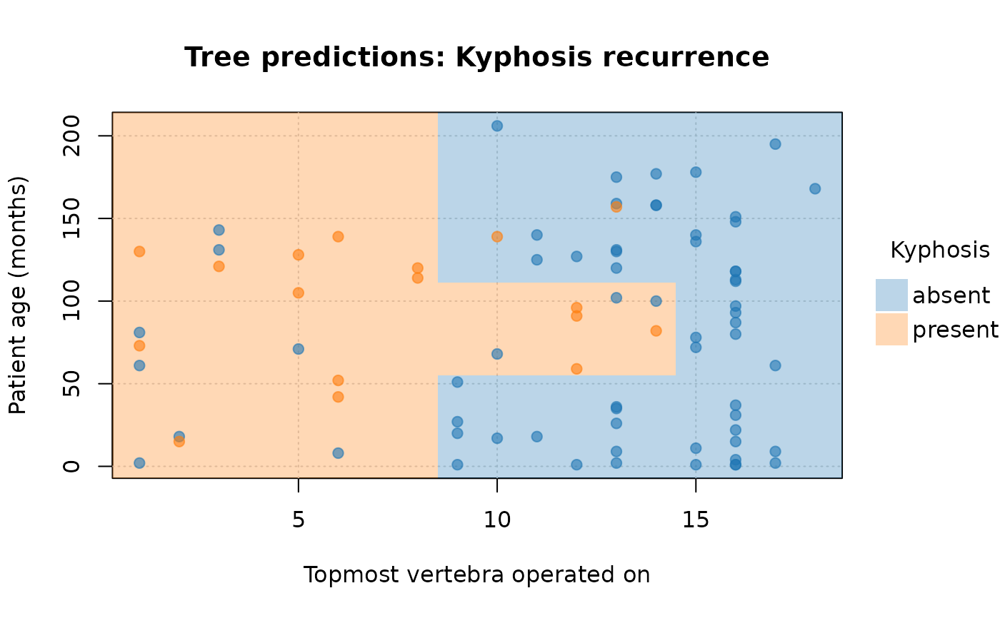
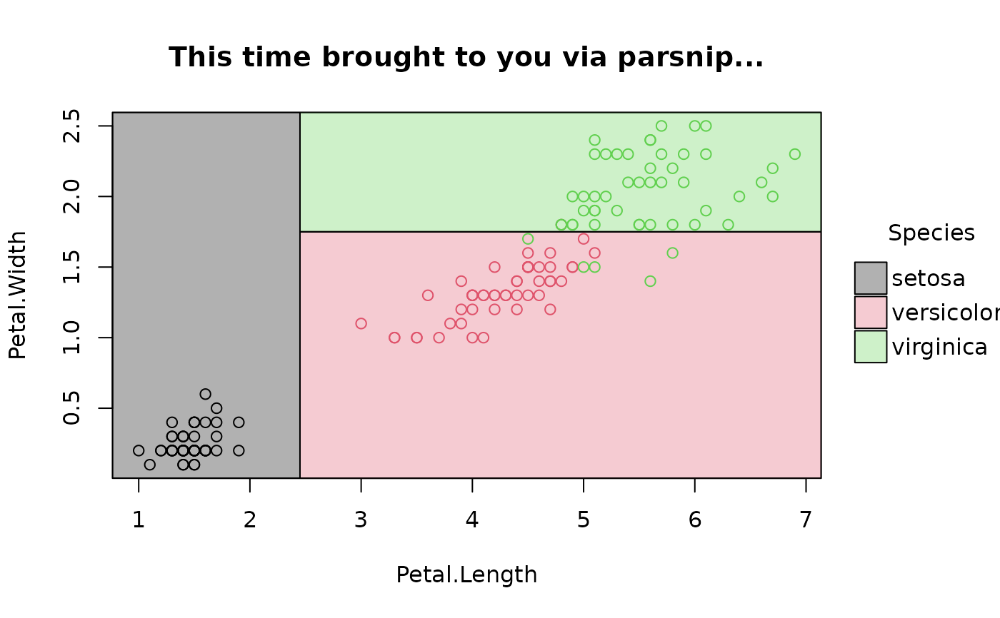

Provides a plot method for parttree objects.
Usage
# S3 method for class 'parttree'
plot(
x,
raw = TRUE,
border = "black",
fill_alpha = 0.3,
expand = TRUE,
jitter = FALSE,
add = FALSE,
...
)Arguments
- x
A parttree data frame.
- raw
Logical. Should the raw (original) data points be plotted too? Default is TRUE.
- border
Colour of the partition borders (edges). Default is "black". To remove the borders altogether, specify as
NA.- fill_alpha
Numeric in the range
[0,1]. Alpha transparency of the filled partition rectangles. Default is0.3.- expand
Logical. Should the partition limits be expanded to to meet the edge of the plot axes? Default is
TRUE. IfFALSE, then the partition limits will extend only until the range of the raw data.- jitter
Logical. Should the raw points be jittered? Default is
FALSE. Only evaluated ifraw = TRUE.- add
Logical. Add to an existing plot? Default is
FALSE.- ...
Additional arguments passed down to
tinyplot.
Value
No return value, called for side effect of producing a plot.
No return value; called for its side effect of producing a plot.
Examples
library("parttree")
## rpart trees
library("rpart")
rp = rpart(Kyphosis ~ Start + Age, data = kyphosis)
# A parttree object is just a data frame with additional attributes
(rp_pt = parttree(rp))
#> node Kyphosis path xmin
#> 1 3 present Start < 8.5 -Inf
#> 2 4 absent Start >= 8.5 --> Start >= 14.5 14.5
#> 3 10 absent Start >= 8.5 --> Start < 14.5 --> Age < 55 8.5
#> 4 22 absent Start >= 8.5 --> Start < 14.5 --> Age >= 55 --> Age >= 111 8.5
#> 5 23 present Start >= 8.5 --> Start < 14.5 --> Age >= 55 --> Age < 111 8.5
#> xmax ymin ymax
#> 1 8.5 -Inf Inf
#> 2 Inf -Inf Inf
#> 3 14.5 -Inf 55
#> 4 14.5 111 Inf
#> 5 14.5 55 111
attr(rp_pt, "parttree")
#> $xvar
#> [1] "Start"
#>
#> $yvar
#> [1] "Age"
#>
#> $xrange
#> [1] 1 18
#>
#> $yrange
#> [1] 1 206
#>
#> $response
#> [1] "Kyphosis"
#>
#> $call
#> rpart(formula = Kyphosis ~ Start + Age, data = kyphosis)
#>
#> $na.action
#> NULL
#>
#> $raw_data
#> NULL
#>
# simple plot
plot(rp_pt)
# removing the (recursive) partition borders helps to emphasise overall fit
plot(rp_pt, border = NA)

# customize further by passing extra options to (tiny)plot
plot(
rp_pt,
border = NA, # no partition borders
pch = 19, # filled points
alpha = 0.6, # point transparency
grid = TRUE, # background grid
palette = "classic", # new colour palette
xlab = "Topmost vertebra operated on", # custom x title
ylab = "Patient age (months)", # custom y title
main = "Tree predictions: Kyphosis recurrence" # custom title
)

## conditional inference trees from partyit
library("partykit")
ct = ctree(Species ~ Petal.Length + Petal.Width, data = iris)
ct_pt = parttree(ct)
plot(ct_pt, pch = 19, palette = "okabe", main = "ctree predictions: iris species")
#> Error in eval(raw_data): object 'ct' not found
## rpart via partykit
rp2 = as.party(rp)
parttree(rp2)
#> node Kyphosis path xmin
#> 3 3 absent Start < 8.5 --> Start < 14.5 14.5
#> 5 5 absent Start < 8.5 --> Start >= 14.5 --> Age < 55 8.5
#> 7 7 absent Start < 8.5 --> Start >= 14.5 --> Age >= 55 --> Age < 111 8.5
#> 8 8 present Start < 8.5 --> Start >= 14.5 --> Age >= 55 --> Age >= 111 8.5
#> 9 9 present Start >= 8.5 -Inf
#> xmax ymin ymax
#> 3 Inf -Inf Inf
#> 5 14.5 -Inf 55
#> 7 14.5 111 Inf
#> 8 14.5 55 111
#> 9 8.5 -Inf Inf
## various front-end frameworks are also supported, e.g.
# tidymodels
library(parsnip)
decision_tree() |>
set_engine("rpart") |>
set_mode("classification") |>
fit(Species ~ Petal.Length + Petal.Width, data=iris) |>
parttree() |>
plot(main = "This time brought to you via parsnip...")

# mlr3 (NB: use `keep_model = TRUE` for mlr3 learners)
library(mlr3)
task_iris = TaskClassif$new("iris", iris, target = "Species")
task_iris$formula(rhs = "Petal.Length + Petal.Width")
#> Species ~ `Petal.Length + Petal.Width`
#> NULL
fit_iris = lrn("classif.rpart", keep_model = TRUE) # NB!
fit_iris$train(task_iris)
plot(parttree(fit_iris), main = "... and now mlr3")